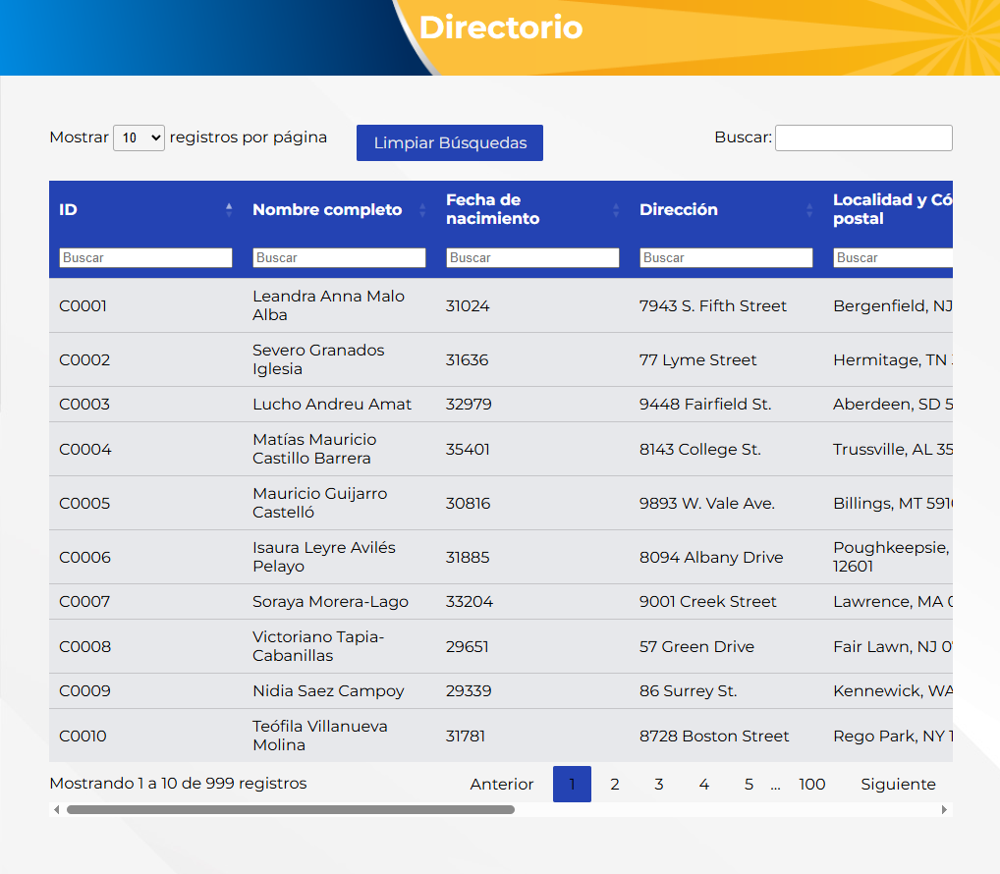
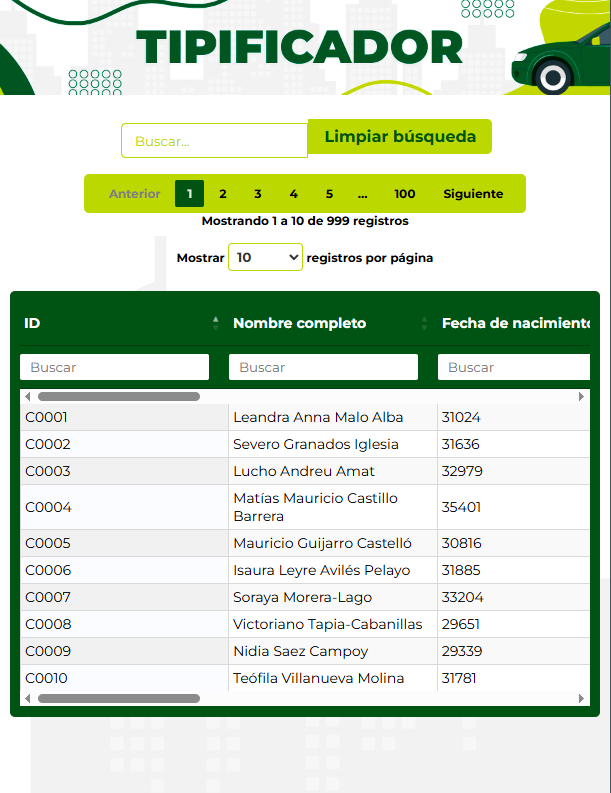
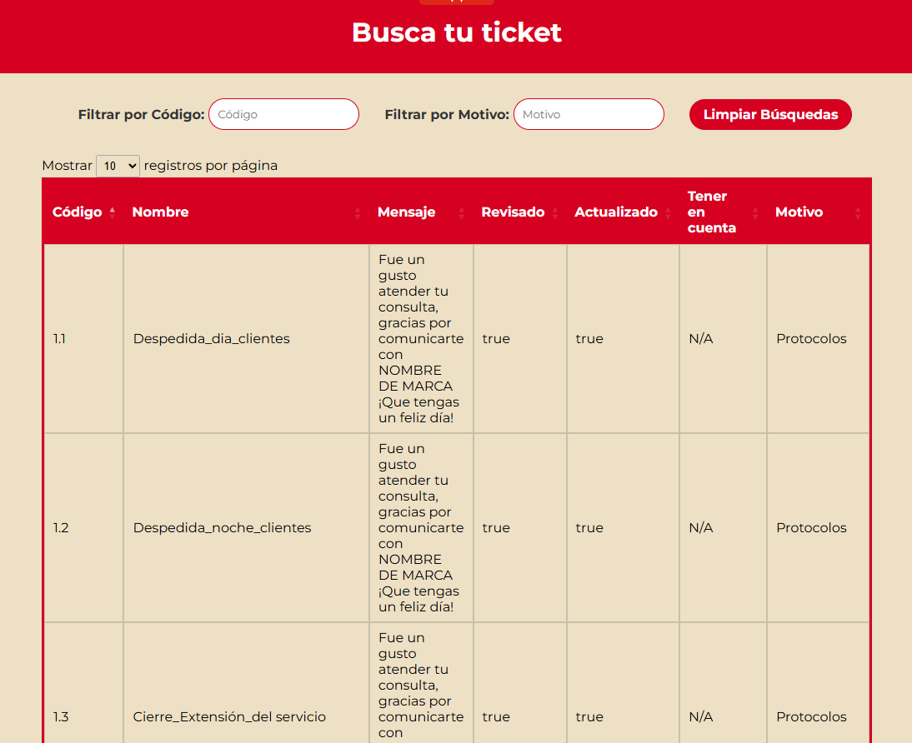

Buscador de datos optimizado
Este facilitador simplifica la búsqueda de datos en Excel, evitando modificaciones accidentales. Es útil en call centers para acceder rápido a la información.

Buscador de datos específico V2
Mejora la precisión en la búsqueda de datos dentro de Excel mediante filtros avanzados.

Buscador por columnas específicas
Filtra por columnas puntuales como códigos o nombres para obtener datos más rápidos.

Glosario interactivo
Consulta términos fácilmente. Ideal para estudiantes y entornos técnicos.

Glosario temático
Organiza conceptos por categorías para facilitar la navegación educativa.